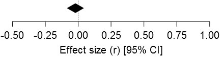
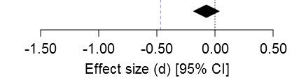

Articles Under Review
Zhong & Liljenquist (2006) -- Replications (8)
Washing away your sins: Threatened morality and physical cleansing
DOI:10.1126/science.1130726 
[Original Abtract ]
Physical cleansing has been a focal element in religious ceremonies for thousands of years. The prevalence of this practice suggests a psychological association between bodily purity and moral purity. In three studies, we explored what we call the "Macbeth effect", that is, a threat to one's moral purity induces the need to cleanse oneself. This effect revealed itself through an increased mental accessibility of cleansing-related concepts, a greater desire for cleansing products, and a greater likelihood of taking antiseptic wipes. Furthermore, we showed that physical cleansing alleviates the upsetting consequences of unethical behavior and reduces threats to one's moral self-image. Daily hygiene routines such as washing hands, as simple and benign as they might seem, can deliver a powerful antidote to threatened morality, enabling people to truly wash away their sins.| Original Studies & Replications | Data/Syntax | Materials/Pre-reg | N | |||
| Zhong & Liljenquist (2006) Study 2 | 27 | |||||
| 36 | ||||||
 |
Study-1.csv | 153 | ||||
|
Study-2-USA.csv | 156 |  |
|||
|
Study-3-India.csv | 286 |  |
|||
| Meta-analytic estimate of replications of Z&L's Study 2: | ||||||
 |
||||||
| Zhong & Liljenquist (2006) Study 3 | 32 | |||||
| 45 |  |
|||||
|
Study-1.sav | 210 | ||||
| Meta-analytic estimate of replications of Z&L's Study 3: | ||||||
 |
||||||
| Zhong & Liljenquist (2006) Study 4 | 45 |  |
||||
| 28 | ||||||
| 115 |  |
|||||
| Meta-analytic estimate of replications of Z&L's Study 4: |  |
|||||
 |
||||||
| Fixed-effect meta-analytic estimate of all replications: |  | |||||
| [Underlying data (CSV)] [R-code] | ||||||
Summary: The main finding that a threat to one's moral purity induces the need to cleanse oneself (the "Macbeth effect") does not (yet) appear to be replicable (overal meta-analytic effect: r = -.02 [+/-.06]). This appears to be the case whether moral purity threat is manipulated via recalling unethical vs. ethical deed (Studies 3 and 4) or transcribing text describing unethical vs. ethical act (Study 2) and whether need to cleanse onself is measured via desirability of cleansing products (Study 2), product choice (Study 3), or reduced volunteerism after cleansing (Study 4). Of course, it is possible the "Macbeth effect" is replicable under different operationalizations and/or experimental designs (e.g., within-subjects).
Original authors' comments: We shared a draft of the curated set of replications with both original authors, and invited them to provide feedback. Chenbo Zhong replied thanking us for the notice and mentioned two published articles that should potentially be considered.
Related Commentary
- Christian Jarret (November 18, 2013): Not so easy to spot: A failure to replicate the Macbeth Effect across three continents
- David Berreby (March 2011): Three Cheers for Failure!
Registered Replication Reports (RRR) @PoPS
RRR1 & RRR2: Alogna et al., ..., Zwaan (2014) 
Schooler & Engstler-Schooler (1990) -- Replications (23)
Verbal overshadowing of visual memories: Some things are better left unsaid
DOI:10.1016/0010-0285(90)90003-M 
[Original Abtract ]
It is widely believed that verbal processing generally improves memory performance. However, in a series of six experiments, verbalizing the appearance of previously seen visual stimuli impaired subsequent recognition performance. In Experiment 1, subjects viewed a videotape including a salient individual. Later, some subjects described the individual's face. Subjects who verbalized the face performed less well on a subsequent recognition test than control subjects who did not engage in memory verbalization. The results of Experiment 2 replicated those of Experiment 1 and further clarified the effect of memory verbalization by demonstrating that visualization does not impair face recognition. In Experiments 3 and 4 we explored the hypothesis that memory verbalization impairs memory for stimuli that are difficult to put into words. In Experiment 3 memory impairment followed the verbalization of a different visual stimulus: color. In Experiment 4 marginal memory improvement followed the verbalization of a verbal stimulus: a brief spoken statement. In Experiments 5 and 6 the source of verbally induced memory impairment was explored. The results of Experiment 5 suggested that the impairment does not reflect a temporary verbal set, but rather indicates relatively long-lasting memory interference. Finally, Experiment 6 demonstrated that limiting subjects' time to make recognition decisions alleviates the impairment, suggesting that memory verbalization overshadows but does not eradicate the original visual memory. This collection of results is consistent with a recoding interference hypothesis: verbalizing a visual memory may produce a verbally biased memory representation that can interfere with the application of the original visual memory.


Summary: The verbal overshadowing effect appears to be replicable; verbally describing a robber after a 20-minute delay decreased correct identification rate in a lineup by 16% (from 54% [control] to 38% [verbal]; meta-analytic estimate = 16% [+/-.04] verbal description deficit, equivalent to r = .17). Still in question, however, is the validity and generalizability of the effect, hence it's still premature for public policy to be informed by verbal overshadowing evidence. Validity-wise, it's unclear whether verbal overshadowing is driven by a more conservative judgmental response bias process or driven by a reduced memory discriminability process because no "suspect-absent" lineups were used (in addition, different processes may operate in different individuals). This is important to clarify because it directly influences how eye-witness testimony should be treated (e.g., if verbal overshadowing is primarily driven by a more conservative response bias process, identifications made after a verbal descriptions should actually be given *more* [rather than less] weight, see Mickes & Wixted, 2015). Generalizability-wise, in a slight variant of RRR2 (i.e., RRR1), a much smaller overall verbal deficit of 4% [+/-.03] emerged, wherein the lineup identification occured 20 minutes after verbal description (which occurred immediately after seeing robbery). Future research needs to determine the size of verbal overshadowing when there's a delay between crime and verbal description and before lineup identification, which reflects real-world conditions.
Original authors' comments: We shared a draft of the curated set of replications with original authors, and invited them to provide feedback. Jonathan Schooler replied stating that the information seemed fine to him.
Related Commentary
- Rolf Zwaan (September 18, 2014): Verbal overshadowing: What can we learn from the First APS Registered Replication Report?
- Mickes & Wixted (2015) follow-up article: On the applied implications of the verbal overshadowing effect
Schnall, Benton, & Harvey (2008a) -- Replications (6)
With a Clean Conscience: Cleanliness Reduces the Severity of Moral Judgments
DOI:10.1111/j.1467-9280.2008.02227.x 
[Original Abtract ]
Theories of moral judgment have long emphasized reasoning and conscious thought while downplaying the role of intuitive and contextual influences. However, recent research has demonstrated that incidental feelings of disgust can influence moral judgments and make them more severe. This study involved two experiments demonstrating that the reverse effect can occur when the notion of physical purity is made salient, thus making moral judgments less severe. After having the cognitive concept of cleanliness activated (Experiment 1) or after physically cleansing themselves after experiencing disgust (Experiment 2), participants found certain moral actions to be less wrong than did participants who had not been exposed to a cleanliness manipulation. The findings support the idea that moral judgment can be driven by intuitive processes, rather than deliberate reasoning. One of those intuitions appears to be physical purity, because it has a strong connection to moral purity.| Original Studies & Replications | Data/Syntax | Materials/Pre-reg | N | |||
| Schnall et al. (2008a) Study 1 | |
Study_1.sav | 40 | |||
|
Exp1_Data.sav |   |
OSF folder | 208 |  |
|
|
Online_Rep.sav |  |
OSF folder | 736 | ||
|
lee_data.csv | 90 | ||||
 Arbesfeld et al. (2014) Arbesfeld et al. (2014) |
60 | |||||
| Besman et al. (2013) |
60 | |||||
| Meta-analytic estimate of replications of SMB's Study 1: | ||||||
 |
||||||
| Schnall et al. (2008a) Study 2 | |
Study_2.sav | 43 | |||
|
Exp2_Data.sav | |
OSF folder | 126 | ||
| Fixed-effect meta-analytic estimate of all replications: |  | |||||
| [Underlying data (CSV)] [R-code] | ||||||
Summary:The main finding that cleanliness priming reduces the severity of moral judgments does not (yet) appear to be replicable (overall meta-analytic effect: r = -.07 [+/-.11]). In a follow-up commentary, Schnall argued that a ceiling effect in Johnson et al.'s (2014a) Study 1 render their results uninterpretable and hence the replication results should be dismissed. However, independent re-analyses by Simonsohn, Yarkoni, Schönbrodt, Inbar, Fraley, and Simkovic appear to rule out such ceiling effect explanation, hence, Johnson et al.'s (2014a, Study 1) results should not be dismissed in gauging the replicability of the original cleanliness priming effect. Huang (2014) has reported new evidence suggesting cleanliness priming may only reduce severity of moral judgments under conditions of "low response effort", however, the research appears to be low-powered (<50%) to detect the small interaction effect found. Either way, independent corroboration of Huang's results is required before confidence is placed in such moderated cleanliness priming effect.
Related Commentary
- Brent Donnellan (May 21, 2014): Random Reflections on Ceiling Effects and Replication Studies
- Simone Schnall (May 23, 2014): An Experience with a Registered Replication Project (Comments section with heated exchanges incl. D. Gilbert's Rosa Parks reference)
- Carol Tweten (May 25, 2014): I'm disappointed: A graduate student's perspective
- Sanjay Srivastava (May 25, 2014): Does the replication debate have a diversity problem?
- Michael Frank (May 26, 2014): Another replication of Schnall, Benton, & Harvey (2008)
- Nicole Janz (May 25, 2014): "Replication bullying": Who replicates the replicators?
- Felix Schönbrodt (May 26, 2014): About replication bullies and scientific progress
- Etienne P. LeBel (May 26, 2014): Unsuccessful replications are beginnings not ends – Part I
- Michael Kraus (May 27, 2014): Notes on replication from an un-tenured social psychologist
- Simone Schnall (May 31, 2014): Further Thoughts on Replications, Ceiling Effects and Bullying
- Commentary related to ceiling effect re-analyses
- Uri Simonsohn (June 4, 2014): Ceiling effects and replications
- Tal Yarkoni (June 1, 2014): There is no ceiling effect in Johnson, Cheung, & Donnellan (2014)
- Felix Schönbrodt (June 2, 2014): Reanalyzing the Schnall/Johnson “cleanliness” data sets: New insights from Bayesian and robust approaches
- R. Chris Fraley (May 24, 2014): Additional Reflections on Ceiling Effects in Recent Replication Research
- Yoel Inbar (May 31, 2014): Ceiling effects?
- Matus Simkovic (June 25, 2014): Guess what? Another Analysis of the Schnall-Johnson Data